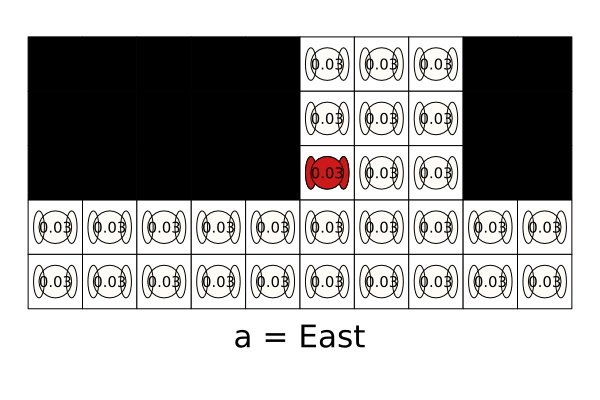
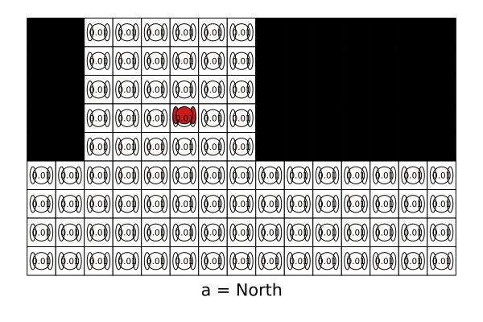
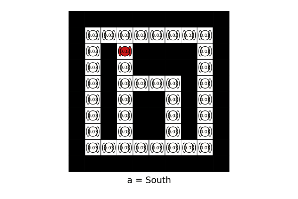

TagPOMDPProblem.jl Documentation
Tag POMDP problem using POMDPs.jl. Original problem was presented in Pineau, Joelle et al. “Point-based value iteration: An anytime algorithm for POMDPs.” IJCAI (2003) (online here).
The goal of the agent is to tag the opponent by performing the tag action while in the same square as the opponent. The agent can move in the four cardinal directions or perform the tag action. The movement of the agent is deterministic based on its selected action. A reward of step_penalty is imposed for each motion action and the tag action results in a tag_reward for a successful tag and tag_penalty otherwise. The agent’s position is fully observable but the opponent’s position is unobserved unless both actors are in the same cell. The opponent moves stochastically according to a fixed policy away from the agent. The opponent moves away from the agent move_away_probability of the time and stays in the same cell otherwise. The implementation of the opponent’s movement policy varies slightly from the original paper allowing more movement away from the agent, thus making the scenario slightly more challenging. This implementation redistributes the probabilities of actions that result in hitting a wall to other actions that result in moving away. The original transition function is available by passing transition_option=:orig during creation of the problem.
Manual Outline
Installation
Use ] to get to the package manager to add the package.
julia> ]
pkg> add TagPOMDPProblemExamples
Default Problem
using POMDPs
using TagPOMDPProblem
using SARSOP # load a POMDP Solver
using POMDPGifs # to make gifs
pomdp = TagPOMDP()
solver = SARSOPSolver(; timeout=150)
policy = solve(solver, pomdp)
sim = GifSimulator(;
filename="default.gif",
max_steps=50
)
simulate(sim, pomdp, policy)
Larger Map
using POMDPs
using TagPOMDPProblem
using SARSOP
using POMDPGifs
map_str = """
xxooooooxxxxxxx
xxooooooxxxxxxx
xxooooooxxxxxxx
xxooooooxxxxxxx
xxooooooxxxxxxx
ooooooooooooooo
ooooooooooooooo
ooooooooooooooo
ooooooooooooooo
"""
pomdp = TagPOMDP(;map_str=map_str)
solver = SARSOPSolver(; timeout=600)
policy = solve(solver, pomdp)
sim = GifSimulator(;
filename="larger.gif",
max_steps=50
)
simulate(sim, pomdp, policy)
Map with Obstacles
using POMDPs
using TagPOMDPProblem
using SARSOP
using POMDPGifs
map_str = """
xxxxxxxxxx
xoooooooox
xoxoxxxxox
xoxoxxxxox
xoxooooxox
xoxoxxoxox
xoxoxxoxox
xoxoxxoxox
xoooooooox
xxxxxxxxxx
"""
pomdp = TagPOMDP(;map_str=map_str)
solver = SARSOPSolver(; timeout=600)
policy = solve(solver, pomdp)
sim = GifSimulator(;
filename="boundary.gif",
max_steps=50,
rng=Random.MersenneTwister(1)
)
simulate(sim, pomdp, policy)
Exported Functions
TagPOMDPProblem.TagPOMDP — MethodTagPOMDP(; kwargs...)Returns a TagPOMDP <: POMDP{TagState, Int, Int}. Default values are from the original paper: Pineau, Joelle et al. “Point-based value iteration: An anytime algorithm for POMDPs.” IJCAI (2003).
The main difference in this implementation is the use of only 1 terminal state and an opponent transition function that aims to keep the probability of moving away to the specified value if there is a valid action (versus allowing the action and thus increasing the probability of remaining in place). To use the transition function from the original implementation, pass orig_transition_fcn = true.
Keywords
map_str::String: String representing the map, 'x' for walls, 'o' for open space. Default is the standard map from the original paper.Default: """ xxxxxoooxx
xxxxxoooxx
xxxxxoooxx
oooooooooo
oooooooooo"""
tag_reward::Float64: Reward for the agent tagging the opponent, default = +10.0tag_penalty::Float64: Reward for the agent using the tag action and not being in the same grid cell as the opponent, default = -10.0step_penalty::Float64: Reward for each movement action, default = -1.0discount_factor::Float64: Discount factor, default = 0.95move_away_probability::Float64: Probability associated with the opponent srategy. This probability is the chance it moves away, default = 0.8transition_option::Symbol: Option for the transition function. Options are:origand:modified. Default is:modified.
POMDPTools.ModelTools.render — Methodrender(pomdp::TagPOMDP, step::NamedTuple; pre_act_text::String="")Render a TagPOMDP step as a plot. If the step contains a belief, the belief will be plotted using a color gradient of green for the belief of the target position and belief over the robot position will be plotted as an orange robot with a faded robot representing smaller belief. If the step contains a state, the robot and target will be plotted in their respective positions. If the step contains an action, the action will be plotted in the bottom center of the plot. pre_act_text can be used to add text before the action text.
pomdp::TagPOMDP: The TagPOMDP to renderstep::NamedTuple: Step step to render with fieldsb,s, andapre_act_text::String: Text to add before the action text
TagPOMDPProblem.TagPOMDP — TypeTagPOMDP <: POMDP{TagState, Int, Int}POMDP type for the Tag POMDP.
Fields
mg::MetaDiGraph: metagraph representing the mapdist_matrix::Matrix{Float64}: distance matrix for the metagraphtag_reward::Float64: reward for the agent tagging the opponenttag_penalty::Float64: reward for the agent using the tag action and not being in the same grid cell as the opponentstep_penalty::Float64: reward for each movement action (negative = penalty)discount_factor::Float64: discount factormove_away_probability::Float64: probability associated with the opponent srategy. This probability is the chance it moves away versus stays in place.transition_option::Symbol: option for the transition function
TagPOMDPProblem.TagState — TypeTagStateRepresents the state in a TagPOMDP problem.
Fields
r_pos::Int: vertex of graph representing the position of the robott_pos::Int: vertex of graph representing the position of the target
Internal Functions
TagPOMDPProblem.list_actions — Methodlist_actions(pomdp::TagPOMDP)Prints a list of actions and their symbol (name).
TagPOMDPProblem.create_metagraph_from_map — Methodcreate_metagraph_from_map(map_str::String)Returns a MetaDiGraph representing the map. 'x' for walls, 'o' for open space.
Properties of the graph:
:nrows: number of rows in the map:ncols: number of columns in the map:num_grid_pos: number of open spaces in the map:node_mapping: dictionary mapping (i, j) position in the map to node number:node_pos_mapping: dictionary mapping node number to (i, j) position in the map
Properties of the edges:
:action: action associated with the edge (e.g. :north, :south, :east, :west)
Example mat_str for the original TagPOMDP (the one in the original paper)
xxxxxoooxx
xxxxxoooxx
xxxxxoooxx
oooooooooo
oooooooooo
TagPOMDPProblem.map_str_from_metagraph — Methodmap_str_from_metagraph(pomdp::TagPOMDP)Returns a string representing the map. 'x' for walls, 'o' for open space. Uses the node_mapping property of the metagraph to determine which nodes are open spaces.
TagPOMDPProblem.state_from_index — Methodstate_from_index(pomdp::TagPOMDP, si::Int)Return the state corresponding to the given index.
TagPOMDPProblem.modified_transition — Methodmodified_transition(pomdp::TagPOMDP, s::TagState, a::Int)Modified transition function for the TagPOMDP. This transition is similar to the original paper but differs with how it redistributes the probabilities of actions where the opponent would hit a wall and stay in place. The original implementation redistributed those probabilities to the stay in place state. This implementation keeps the probability of moving away from the agent at the defined threshold if there is a valid movement option (away and not into a wall). The movement of the agent is deterministic in the direction of the action.
TagPOMDPProblem.orig_transition — Methodorig_transition(pomdp::TagPOMDP, s::TagState, a::Int)Alternative transition function for the TagPOMDP. This transition is mimics the original paper. The move away probability is split equally between north/south and east/west pairs. If a move results in moving "away" from the agent while ignoring walls, that move is still considered valid. This results in the the agent hitting a wall and staying in place...thus increasing the probability of staying in place.
TagPOMDPProblem.move_direction — Methodmove_direction(pomdp::TagPOMDP, v::Int, a::Int)Move the robot in the direction of the action. Finds the neighbors of the current node and checks if the action is valid (edge with corresponding action exists). If so, returns the node index of the valid action.